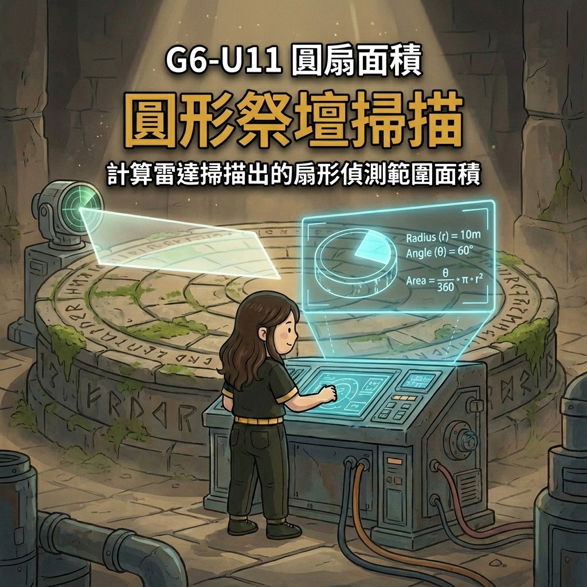

請旋轉您的設備
探測儀需要橫向畫面以發揮最大效能，
請將手機轉為橫向以繼續任務。
Jessie Math捷析
首頁
遊戲大廳
圓面積與扇形面積
🏺
埃及文物探測
潛入沙土遺跡，在崩塌前搶救珍貴物資
【任務守則】
1. 點擊沙土中飄浮的埃及文物進行掃描。
2. 計算
圓面積
、
圓周長
、
扇形
或反推數值。
3. 備有
透明白板
，可直接在畫面上計算！
4.
限時 120 秒
，成功搶救
7 個文物
即過關，可在時間內持續收集！
※ 若時間結束時未達標準，文物將被震碎！
啟動任務
🏆 探測菁英榜
名次
玩家
搜取物資數
狀態
日期
崩塌倒數:
120
s
已搶救:
0 / 7
回主選單
白板
音效
暫停
重新開始
分析文物數據...
(點擊左下角「白板」可全螢幕塗鴉，不影響輸入)
確認挖掘
繼續探測新文物
